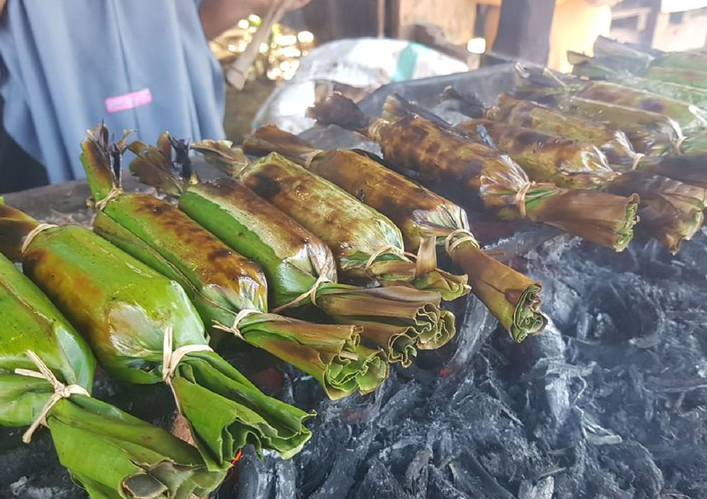
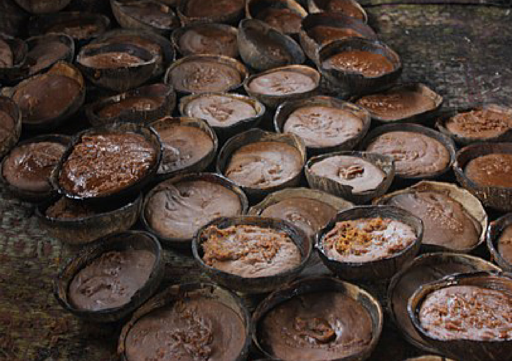

Produk Desa
Produk desa merujuk pada barang atau jasa yang dihasilkan oleh suatu desa, mencerminkan karakteristik, sumber daya, dan keunikan budaya setempat. Produk ini bisa berasal dari sektor pertanian, perikanan, kerajinan tangan, makanan tradisional, atau industri rumahan lainnya. Pengembangan produk desa tidak hanya bertujuan untuk meningkatkan ekonomi lokal tetapi juga untuk melestarikan warisan budaya dan memperkuat identitas desa.
Virgin Coconut Oil
Indonesia memang dikenal sebagai surganya kuliner, dengan setiap daerah memiliki keunikan rasa tersendiri. Dan di Desa Kaluku Nangka, kita menemukan produk wisata yang tak kalah istimewa, yakni Minyak VCO (Virgin Coconut Oil) yang kaya akan manfaat kesehatan. Selain itu, jangan lewatkan Taqba-Taqba (Dodol Panggang) yang gurih dan lezat, dengan bahan dasar tradisional tanpa campuran pengawet makanan. Inilah kuliner autentik yang memanjakan lidah dan memelihara kesehatan Anda.
Selamatkan selera Anda dengan Minyak VCO, cairan emas yang tak hanya lezat, tetapi juga sarat dengan manfaat kesehatan. Diperoleh dari kelapa murni, Minyak VCO Desa Kaluku Nangka menjadi keharusan bagi pecinta kuliner sejati yang peduli dengan kesehatan.

Taqba-taqba
Dan jangan sampai terlewatkan sensasi Taqba-Taqba, Dodol Panggang khas Desa Kaluku Nangka. Gurihnya cita rasa yang dihasilkan dari bahan-bahan tradisional tanpa bahan pengawet memberikan pengalaman kuliner yang otentik. Rasakan kelezatan yang tahan lama, sejauh mata memandang, tak ada yang sebanding dengan cita rasa autentik Taqba-Taqba.
Mari hadirkan kelezatan Desa Kaluku Nangka di meja makan Anda. Dukung produk lokal, nikmati kekayaan kuliner yang terjaga keasliannya. Itulah ciri khas kuliner Desa Kaluku Nangka, tempat di mana setiap gigitan adalah petualangan rasa yang tak terlupakan.
Taqba-Taqba adalah kuliner lokal Mandar yang terbuat dari tepung ketan, santan kelapa, dan gula aren dengan konsistensi mirip dodol dibungkus daun pisang dan dipanggang sedikit di atas bara api. Jajanan lokal yang termasuk dalam klasifikasi kuliner yang legendaris karena tak banyak dijajakan. Saat ini, hanya ada sedikit penjaja kuliner lokal yang menyediakan Taqba-Taqba. Pun tak begitu banyak warga lokal Sulawesi Barat yang mengenal makanan lezat ini.
Bentuknya panjang, pipih pada kedua bagian ujungnya dan memiliki tusukan lidi dari bahan daun kelapa sebagai penahan agar kemasan daun pisang tidak terbuka. Kemasan daun pisangnya terdiri dari dua bagian, satu bagian membungkus langsung kuliner ini, sementara bagian lainnya adalah lapisan kedua yang lebih panjang. Cara mengemasnya hampir sama dengan gogos.
Gula Aren
Gula aren, atau gula merah, atau gula kawung adalah pemanis yang dibuat dari nira yang berasal dari tandan bunga jantan pohon enau. Gula aren biasanya juga diasosiasikan dengan segala jenis gula yang dibuat dari nira, yaitu cairan yang dikeluarkan dari bunga pohon dari keluarga palma, seperti kelapa, aren, dan siwalan.
Sumber daya alam yang melimpah sehingga banyak aneka macam produk yang ada di Desa Kaluku Nangka, salah satunya adalah Pembuatan Gula Aren yang masih di buat secara tradisional.
